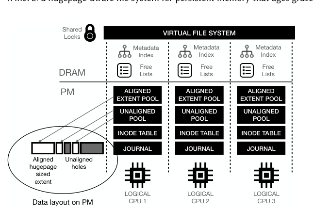
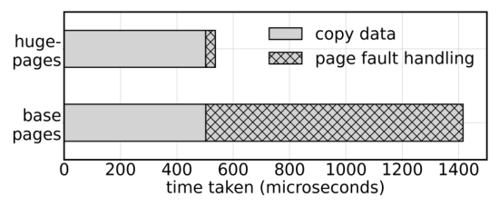
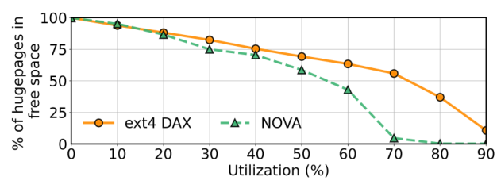
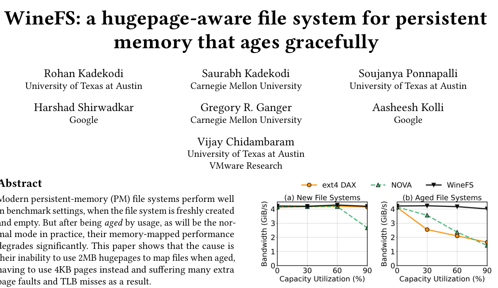
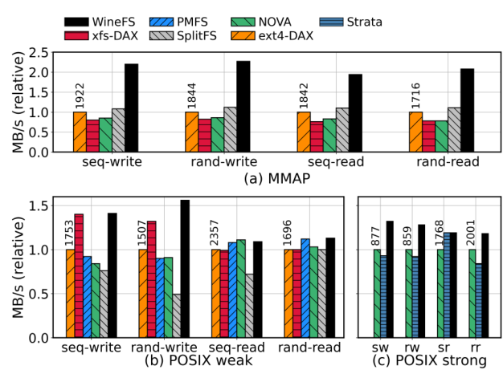
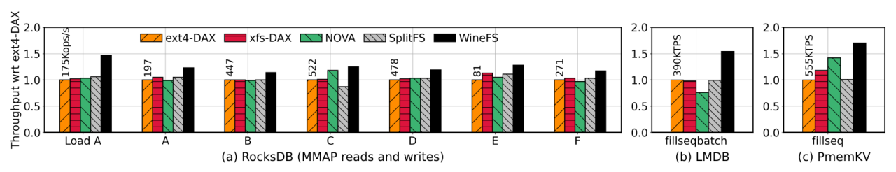
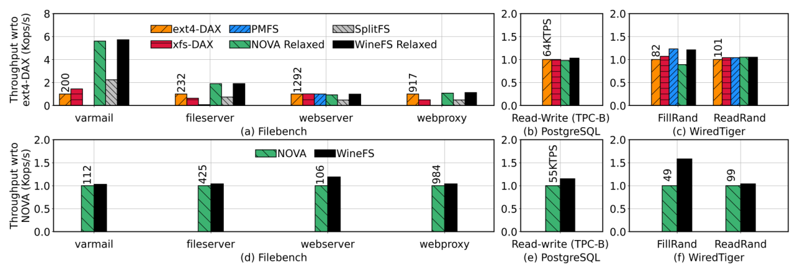
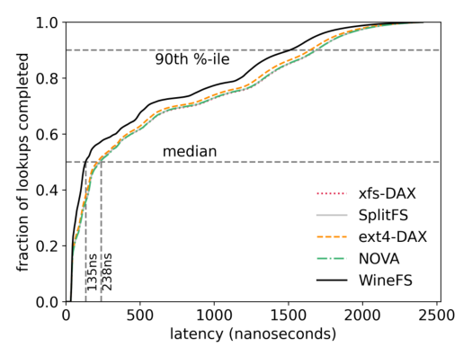
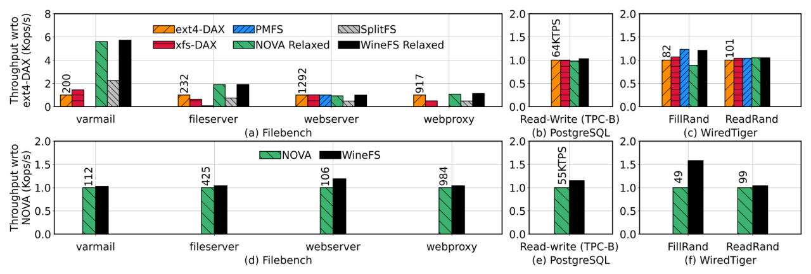
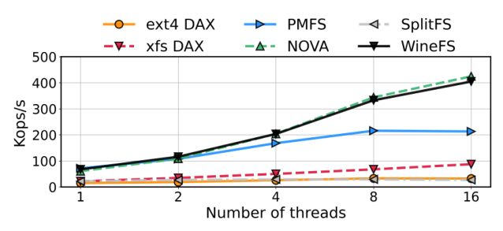

WineFS: a hugepage-aware file system for persistent memory that ages gracefully
This page was written by an AI model to give a high-level overview of the paper. Please check the paper for detail: ACM Digital Library.
Persistent-memory (PM) file systems are almost always benchmarked on a freshly created, empty instance. Real file systems are not like that: they accumulate years of creates, deletes and updates, and operators deliberately keep them close to full to avoid wasted capacity. The paper shows that this gap between benchmark and reality matters a great deal for PM. When ext4-DAX and NOVA, two representative PM file systems, are aged with a realistic create/delete workload, the throughput they deliver to the dominant PM access pattern, memory-mapped files, collapses: write bandwidth drops by about 50% even when the file system is only 60% full, even though a freshly formatted instance of the same file system hits peak bandwidth.
The paper traces this entirely to one mechanism: whether the memory-mapped file can still be backed by 2MB hugepage mappings. Getting a hugepage on a page fault requires the file's physical extent to be 2MB-aligned and contiguous; a single byte of misalignment forces a fallback to 4KB base pages, and the paper measures that this fallback causes 512x more page faults and TLB misses. Existing allocators are not built to protect this property under aging. Disk-era allocators such as ext4-DAX's and xfs-DAX's optimize for contiguity and locality, not 2MB alignment, so they let already-available aligned extents go unused. Log-structured PM file systems such as NOVA and Strata fragment free space themselves, because every file write relocates data into a per-file log; at 70% utilization NOVA has almost no aligned 2MB extents left. Reactive fixes do not help: a defragmentation utility competes with foreground traffic for PM bandwidth (the paper measures a 25 to 40% slowdown while one runs) and only buys temporary relief before the file system fragments again.
WineFS's premise is that hugepage-awareness has to be designed in end-to-end, because allocation policy, crash-consistency mechanism and concurrency scheme all interact to determine whether aligned extents survive aging; it cannot be bolted onto an existing allocator.
WineFS partitions the file system per logical CPU, each with its own journal, inode table, and free lists of aligned 2MB extents and unaligned holes. A novel alignment-aware allocator splits every allocation request into hugepage-sized and smaller pieces, satisfying large requests from the aligned-extent pool and small requests from the hole pool, while metadata lives in dedicated, in-place, recycled locations so it does not consume aligned space. For crash consistency, WineFS uses per-CPU fine-grained undo journaling, which preserves the on-PM data layout (at the cost of writing metadata twice) instead of the log-structuring or copy-on-write used by NOVA and Strata, which relocate data and erode alignment over time. On top of that, WineFS applies a hybrid atomicity scheme: it journals in place to update aligned extents, keeping their hugepage mapping intact, and falls back to copy-on-write only for unaligned holes, where preserving layout does not matter. DRAM red-black-tree indexes accelerate directory and free-space lookups.
Built on the PMFS code base (about 10K lines total) in Linux 5.1 and evaluated on a 500GB Intel Optane DC Persistent Memory partition aged to 75% utilization with the Geriatrix tool, WineFS gets up to 2x higher LMDB write throughput than NOVA and up to 70% higher PmemKV throughput than ext4-DAX, and 56% lower median lookup latency than NOVA on a memory-mapped persistent radix tree, while matching or beating existing PM file systems on system-call-bound macrobenchmarks and applications and scaling as well as NOVA as thread count increases.

Key takeaways
- PM file systems are usually benchmarked clean and empty, but real file systems are aged and kept near-full; aging alone cuts mmap write bandwidth by about 50% in ext4-DAX and NOVA at just 60% utilization, while WineFS stays at peak even at 90% full.
- The root cause is loss of 2MB hugepage mappings from free-space fragmentation: base-page fallback costs 512x more page faults and TLB misses, and PM's slow page-fault handling (1 to 2 µs) dwarfs a single 64-byte access (100 to 200 ns); hugepages also help even when every page is pre-faulted, cutting median random-read latency 10x by avoiding TLB-miss cache pollution.
- WineFS's fix: an alignment-aware allocator (large requests get aligned 2MB extents, small requests get unaligned holes), per-CPU partitioning (own journal, inode table, free lists per logical CPU) instead of per-file logging, undo journaling instead of log-structuring or copy-on-write for metadata, and a hybrid atomicity scheme (journal aligned extents, copy-on-write holes).
- Built on the PMFS code base in Linux 5.1 (about 10K LOC total); POSIX-compliant with no required application changes; offers a strict mode (atomic, synchronous data and metadata) and a relaxed mode (metadata-only consistency).
- On Intel Optane DC PMM aged to 75% via Geriatrix, WineFS beats NOVA by up to 2x (LMDB) and ext4-DAX by up to 70% (PmemKV), cuts page faults by up to 450x, and matches or exceeds every baseline on system-call-bound workloads too.
From hugepage loss to a hugepage-preserving file system
Why aging destroys hugepage mappings, and how WineFS's allocator, journaling and concurrency design keep them intact.
1 · Persistent memory and how applications reach it
PM is byte-addressable and sits on the memory bus, reachable with ordinary load and store instructions, but it is not DRAM: the paper's measurements put PM read latency at 2 to 3x DRAM's, write latency similar to DRAM's, read bandwidth at about a third of DRAM's and write bandwidth at about 0.17x DRAM's. Applications reach PM in two ways. POSIX system calls (read()/write()) go through the kernel and the Virtual File System (VFS) layer, which adds real overhead: writing a 1GB file sequentially is 2x faster via memory-mapped access than via system calls, and the system-call path spends 11x more time in the kernel. PM-native software (PMDK, Redis-pmem, RocksDB-pmem, Memcached, PM databases) therefore memory-maps files and reads and writes PM directly with loads and stores.
2 · The hidden cost of mapping without hugepages

Memory-mapping a file requires the kernel to build page table entries mapping virtual addresses to PM locations, and this cost depends heavily on whether a 2MB hugepage or a 4KB base page is used. Mapping and writing a 2MB file is 2x faster with hugepages: without them, two thirds of the total time goes to handling page faults and setting up page tables; with them, most of the time goes to the actual data copy. To get a hugepage on a fault, the file's underlying physical extent must be 2MB-aligned and unfragmented; a single byte of misalignment forces the kernel to fall back to base pages, with the measured 512x increase in page faults and TLB misses that follows.
3 · Hugepages still matter even when every page is pre-faulted
One might try to sidestep page faults entirely by pre-faulting the whole mapping outside the critical path, but the paper shows this is not a full fix. First, it is not always possible: applications like LMDB use sparse mappings and allocate on demand, so pre-faulting would waste space. Second, even with every page pre-faulted so there are no faults in the critical path, hugepages still reduce TLB misses, and a TLB miss forces a page-table walk whose entries get cached in the processor cache, evicting application data. In a controlled experiment reading random elements of a large, fully pre-faulted memory-mapped array, median read latency was 10x higher with base pages than with hugepages, purely from this cache-displacement effect.
4 · Aging fragments free space and kills hugepage eligibility

The paper ages 100GB ext4-DAX and NOVA partitions with the Geriatrix tool using up to 40TB of file creates and deletes. As utilization climbs, the number of 2MB-aligned, contiguous free regions collapses in both file systems; at 70% utilization NOVA has close to zero aligned extents left. Critically, this fragmentation does not hurt applications that access PM through system calls, since PM gives similar bandwidth for sequential and random access; it specifically breaks memory-mapped access.
Why can't existing designs just fix this? A user-space defragmentation tool cannot guarantee 2MB alignment without allocator support in the file system itself; the paper observes that ext4-DAX and NOVA do not reliably use aligned extents even when they are available, because their allocators optimize for contiguity and locality rather than alignment. A file-system-wide defragmentation daemon would need to run often to keep up, and every run competes with foreground traffic for scarce PM bandwidth (measured 25 to 40% slowdown while defragmenting). Always allocating in 2MB chunks (as ext4's bigalloc mode does) avoids fragmentation but wastes space, since many files are smaller than 2MB.
5 · WineFS's goals
- Be POSIX-compliant with no required application changes.
- Provide hugepage-sized, hugepage-aligned extents for memory-mapped files whenever possible.
- Not sacrifice performance for applications using system calls.
- Not sacrifice performance on a newly created (unaged) file system.
- Preserve hugepages through aging, not just at creation.
- Provide strong atomic, synchronous guarantees (a strict mode), with a relaxed, metadata-only-consistent mode as an option.
6 · Architecture: per-CPU partitioning instead of per-file logging
WineFS partitions the file system across logical CPUs. Each logical CPU owns its own journal, inode table, and pools of free aligned extents and unaligned holes, tracked with DRAM free lists and a metadata index. An allocation request arising on a CPU is normally served entirely from that CPU's local pools, with no cross-CPU communication. This differs deliberately from NOVA, which achieves concurrency with a per-file log: that gives high parallelism but fragments free space, since every file's log consumes part of an aligned extent. Because WineFS's unit of parallelism is the CPU rather than the file, it gets comparable concurrency without that fragmentation cost. Coordination across the per-CPU journals happens through the shared VFS layer: VFS locks directory inodes, WineFS locks individual files for modification operations, and a file can be mid-transaction in only one per-CPU journal at a time, so different files can still be journaled concurrently on different CPUs.
7 · The alignment-aware allocator
- Every incoming allocation request is internally split into pieces no larger than a hugepage.
- Hugepage-sized pieces are served from the per-CPU aligned-extent pool, a linked list: the head extent is removed to satisfy a request, and a freed extent is appended at the tail.
- Smaller pieces are served from the per-CPU unaligned-hole pool, a red-black tree keyed by block offset, using first-fit.
- A freed unaligned extent is merged with adjacent free extents; if the merge produces a full 2MB aligned region, it is promoted back into the aligned-extent pool.
- If a CPU's local pool runs out, the allocator borrows from whichever CPU currently has the most free extents of the needed kind (aligned or unaligned).
8 · Crash consistency: journaling instead of log-structuring or copy-on-write
NOVA and Strata write file-system metadata only once, by relocating it (log-structuring or copy-on-write), but that relocation is exactly what fragments free space and destroys alignment over time. WineFS instead uses per-CPU journaling, which writes metadata twice (once to the journal, once in place) but leaves the on-PM layout untouched. The paper judges this tradeoff worthwhile given PM's write endurance (a 256GB Intel PM module is rated to withstand 350PB of writes). Data updates follow a matching hybrid rule: updates to aligned extents are journaled in place, so the file keeps its hugepage mapping after the update, while updates to unaligned holes use copy-on-write, writing into a new hole from the allocator, since there is no hugepage mapping to protect there.
9 · Making system calls fast without refragmenting the file system
- Fine-grained undo journaling. Each per-CPU journal uses 64-byte transaction entries, persisted immediately because metadata operations are synchronous. Undo journaling copies old data to the journal before updating in place; it costs more latency while writing the transaction (it needs locks to update in place) but none after commit, giving lower tail latency than redo journaling.
- DRAM indexes. Red-black trees index directory entries and free-space lists in DRAM, replacing the sequential scans that slow down PMFS on metadata-heavy workloads.
- NUMA awareness. Each process gets a home NUMA node (the one with the most free space) on first create or write; later writes are routed to that node, migrating the process if needed, since remote writes are costlier than remote reads; reads are not used to trigger migration, to avoid thrashing; child processes inherit their parent's home node.
- Reactive rewriting. If small, unaligned allocations leave a file fragmented by the time it is memory-mapped, a background thread rewrites it using large (aligned) allocations and atomically swaps the directory entry in a journal transaction. The paper describes this path as extremely rare in practice.
- Cross-system alignment. WineFS records a file's aligned-extent status as an extended attribute so that utilities like
rsyncandcp, which preserve extended attributes, carry that information to a destination WineFS partition, which can then allocate aligned extents for the copy even though the copy utility itself writes in small chunks. Directories can propagate the same attribute to the files created within them.
10 · Implementation and recovery
WineFS is built on the PMFS code base (about 6K LOC base, about 10K LOC total after WineFS's additions) in Linux kernel 5.1. On a clean unmount, the DRAM allocator free lists and inode free lists are serialized to PM and deserialized back on mount. On a crash, WineFS replays the per-CPU journals in global transaction-ID order (transaction IDs are a single shared counter across all per-CPU journals), using each journal's wraparound counter to identify valid entries, and rolls back any transaction that has a START entry but no matching COMMIT entry.
Results for all of this are in the Evaluation tab.
Evaluation
What the paper measures on real Optane hardware, aged and unaged, and what each figure shows.
All experiments run on a single socket of a two-socket Intel Optane DC Persistent Memory machine, with NUMA support disabled in WineFS to keep comparisons fair against baselines that lack NUMA support. File systems are aged with the Geriatrix tool so that experiments reflect realistic, utilized file systems rather than freshly formatted ones.
| Aspect | As stated in the paper |
|---|---|
| Platform | Two-socket machine, 28 cores, 112 threads, 500GB Intel Optane DC Persistent Memory module; Fedora 30, Linux 5.1 kernel; a single socket used, NUMA awareness disabled in WineFS for fair comparison |
| Aging method | Geriatrix tool; Agrawal aging profile (mix of files < 2MB and ≥ 2MB, 56% of capacity in large files) applied as 165TB of write activity (creates/deletes) on a 500GB partition; file systems also aged to 75% utilization; an HPC-like profile (Wang et al.) used as a secondary check |
| Workloads | Memory-mapped: YCSB on RocksDB, LMDB fillseqbatch, PmemKV fillseq, P-ART lookups. System-call: Filebench varmail/fileserver/webserver/webproxy, PostgreSQL pgbench read-write, WiredTiger fillrandom/readrandom; also a multithreaded create-append-fsync-unlink microbenchmark for scalability |
| Baselines | Metadata-consistency group: ext4-DAX, xfs-DAX, PMFS, NOVA-relaxed, SplitFS, WineFS-relaxed. Data+metadata-consistency group: NOVA, Strata, WineFS-strict (default) |
| Metrics | Throughput (sequential/random read/write), end-to-end application throughput, latency distributions, page-fault counts, cache/TLB miss counts, thread scalability, recovery time, memory and CPU overhead |
Aging collapses mmap write bandwidth for ext4-DAX and NOVA; WineFS is unaffected

What it shows. Write bandwidth to memory-mapped files (sequential writes via memcpy()) for ext4-DAX, NOVA, and WineFS, on PM, comparing an un-aged file system against one aged with Geriatrix on a 100GB partition. Un-aged, all three file systems reach peak bandwidth. Aged, ext4-DAX and NOVA lose about 50% of their bandwidth even at just 60% utilization, while WineFS maintains its high performance whether aged or not, up to 90% full.
What to take from it. This is the paper's headline demonstration that the bottleneck is hugepage loss, not the PM media itself: WineFS runs on the same hardware and media as the other two but is designed specifically to retain aligned extents as the file system fills and churns.
WineFS matches or beats the best file system on both syscall and mmap throughput, after aging

What it shows. Sequential and random read/write throughput on an aged file system, for both the memory-mapped access mode (memcpy() on a 50GB mapped file) and the system-call access mode (4KB appends/reads/writes with an fsync() every 10 operations, shown for POSIX-strong and POSIX-weak consistency), across ext4-DAX, xfs-DAX, PMFS, NOVA(-relaxed), SplitFS, Strata and WineFS.
What to take from it. On memory-mapped access, WineFS outperforms NOVA by 2.6x on sequential and random writes, 2.3x on sequential reads and 2.7x on random reads; WineFS spends about 3% of its time handling page faults versus NOVA's 60%. On system-call writes, WineFS beats NOVA by up to 25%, since NOVA must invalidate and re-add per-file log entries and update DRAM indexes on every overwrite. WineFS and NOVA both beat Strata, which pays an extra data copy from per-process logs to shared PM. The result demonstrates that WineFS's two sets of design choices, for mmap and for syscalls, do not conflict.
Application-level gains on aged file systems

What it shows. End-to-end throughput on a file system aged to 75% utilization, for YCSB workloads on RocksDB, LMDB's fillseqbatch workload, and PmemKV's fillseq workload, split into a metadata-consistency panel (ext4-DAX, xfs-DAX, SplitFS, NOVA-relaxed, WineFS-relaxed) and a data-and-metadata-consistency panel (NOVA, Strata, WineFS-strict).
What to take from it. WineFS beats ext4-DAX and NOVA by up to 50% on average across YCSB workloads on RocksDB; beats ext4-DAX by 54% and NOVA by 2x on LMDB; and beats NOVA by 20%, ext4-DAX by 70% and xfs-DAX by 45% on PmemKV. The paper notes that the relative order of ext4-DAX and NOVA can flip between workloads depending on whether page zeroing happens on allocation (fallocate()) or on the page fault itself, a detail independent of WineFS's own design.
Page faults drop by up to 450x

What it shows. A table of page-fault counts for the same YCSB/RocksDB, LMDB and PmemKV workloads on the aged file systems, comparing WineFS, ext4-DAX, xfs-DAX, SplitFS and NOVA.
What to take from it. WineFS has the lowest absolute page-fault counts across every workload (for example 1.59 million for the YCSB load phase, 4.85 million for LMDB, 0.01 million for PmemKV); other file systems range from about 1.05x more (NOVA on one YCSB workload) up to 455x more (xfs-DAX on PmemKV), with ext4-DAX and xfs-DAX around 200 to 292x more on LMDB. This table is the direct mechanism behind Result 3's throughput differences: preserved hugepage mappings translate measurably into fewer page faults.
Hugepages still help even with full pre-faulting, via fewer cache and TLB misses

What it shows. Latency distribution for 60 million random lookups against a hot set of 125,000 unique keys in a persistent adaptive radix tree (P-ART) with 60 million inserted keys, memory-mapped and fully pre-faulted before the lookups so no page faults occur in the critical path, compared across file systems.
What to take from it. WineFS's median lookup latency is 35% lower than ext4-DAX's and 60% lower than NOVA's; WineFS incurs 400x fewer last-level-cache misses and 2x fewer TLB misses than the next-best file system, ext4-DAX. This isolates a second, independent benefit of hugepage preservation beyond avoiding page faults: coarser page-table mappings leave more cache capacity for application data.
No tradeoff for system-call-bound applications on clean file systems

What it shows. Throughput of Filebench macrobenchmarks (varmail, fileserver, webserver, webproxy), PostgreSQL's pgbench read-write workload, and WiredTiger's fillrandom and readrandom workloads, on newly created file systems, split into relaxed-mode and strict-mode consistency panels.
What to take from it. WineFS and NOVA-relaxed beat ext4-DAX by up to 5x on Filebench, since ext4-DAX and xfs-DAX pay costly fsync() and metadata overheads on varmail, SplitFS inherits ext4-DAX's JBD2-journal bottleneck for creates and deletes, and PMFS is limited by sequential metadata scans. WineFS beats NOVA by 15% on PostgreSQL's pgbench because NOVA must delete and re-add per-inode log entries on overwrites. On WiredTiger's fillrandom, WineFS is 60% faster than NOVA and 20% faster than ext4-DAX, because NOVA copies partial blocks into new 4KB pages on unaligned appends while WineFS appends directly into partially full blocks under journaling; readrandom throughput is similar across file systems. The result confirms WineFS's goal of not sacrificing system-call performance to get hugepage preservation.
Scalability matches NOVA, without NOVA's fragmentation side effect

What it shows. Throughput of a multithreaded microbenchmark (create, append at 4KB granularity, fsync(), unlink per thread) as thread count increases, across the same set of file systems.
What to take from it. WineFS and NOVA scale comparably and best among the file systems tested: WineFS's per-CPU fine-grained journals avoid both NOVA's per-inode-log fragmentation and ext4-DAX's and xfs-DAX's stop-the-world fsync() journal flush. SplitFS inherits ext4-DAX's low scalability, and PMFS scales reasonably via its own fine-grained journaling. All file systems plateau past 16 threads due to bottlenecks in the shared VFS layer, not the file systems themselves.
FAQ
Q·What does "hugepage-aware" mean for a file system, concretely?▾
It means the file system's allocator, crash-consistency mechanism and concurrency scheme are all designed so that files tend to land on, and stay on, 2MB-aligned, contiguous physical extents. That is the only condition under which the OS can map the file with a 2MB hugepage instead of many 4KB base pages when it is memory-mapped.
Q·Why does a freshly created file system hide this problem?▾
On an empty or lightly used file system, free space is naturally contiguous and aligned, so almost any allocator can hand out 2MB-aligned extents. The problem only appears after enough creates, deletes and updates have fragmented free space, which is exactly the realistic state of a file system in production.
Q·Why do extra page faults hurt so much more on PM than on disk?▾
On disk-backed systems, the dominant cost is the I/O itself, so a page fault's overhead is comparatively small. On PM, a single 64-byte access only takes 100 to 200 nanoseconds, while handling a page fault costs 1 to 2 microseconds. If faults sit on the application's critical path, that overhead can dominate the actual PM access cost.
Q·If I just pre-fault every page, doesn't the hugepage benefit go away?▾
Not entirely. Pre-faulting removes faults from the critical path, but hugepages also reduce TLB misses, and the paper measured a 10x higher median latency with base pages even on a fully pre-faulted mapping, because TLB-miss handling evicts application data from the processor cache to make room for page-table entries. Pre-faulting also is not always an option: applications with sparse mappings, such as LMDB, would waste significant space if forced to pre-fault everything.
Q·Why can't a periodic defragmentation tool just fix this?▾
Two reasons. Without allocator support inside the file system, a user-space tool cannot guarantee that a rewritten file lands on a 2MB-aligned extent. And running defragmentation steals PM bandwidth from foreground work; the paper measured a 25 to 40% slowdown on a concurrent application while defragmentation ran, and PM fills up fast enough that the fix would need to run constantly.
Q·Why does NOVA's log-structured design hurt hugepage preservation?▾
NOVA gives each file its own log to get high concurrency, but every update to that log claims space from the file system's pool of extents, including aligned ones, and that per-file log keeps moving as the file is written. The paper shows this fragments free space heavily: at 70% utilization, NOVA has almost no 2MB-aligned extents left.
Q·Why does WineFS use journaling, which writes metadata twice, instead of the single-write log-structuring or copy-on-write approach?▾
Log-structuring and copy-on-write write metadata only once, but they do so by relocating it, which is exactly what destroys a carefully planned, hugepage-friendly layout over time. Journaling writes metadata to the journal and then in place, but the in-place write preserves the layout. The paper judges the extra write worthwhile given PM's write endurance (a 256GB Optane module is rated for about 350PB of total writes).
Q·How does WineFS get NOVA-level concurrency without NOVA's per-file-log fragmentation?▾
By partitioning the file system per logical CPU instead of per file. Each CPU has its own journal, inode table and extent pools, so most allocation and journaling requests are served locally without cross-CPU coordination, and no per-file structure eats into aligned extents. The shared VFS layer, with directory-inode locks and WineFS's own file locks, keeps the per-CPU journals mutually consistent.
Q·Does an application need to change to benefit from WineFS?▾
No. WineFS passes the Linux POSIX file system test suite and requires no application modifications; it decides placement and hugepage eligibility transparently underneath the normal mmap() and system-call interfaces.
Q·What is the difference between WineFS's strict and relaxed modes?▾
Strict mode (the default) makes both data and metadata operations atomic and synchronous, matching the guarantees of NOVA and Strata. Relaxed mode makes only metadata operations atomic and synchronous, leaving data operations potentially partially completed after a crash, matching the guarantees of ext4-DAX, xfs-DAX and PMFS.
Q·Does WineFS sacrifice performance for applications that use system calls instead of memory-mapping?▾
The paper's results say no: on Filebench, PostgreSQL and WiredTiger benchmarks that access PM through system calls, WineFS matches or beats existing PM file systems, thanks to fine-grained per-CPU undo journaling and DRAM metadata indexes that were chosen specifically because they do not reintroduce the fragmentation that log-structuring causes.
Q·What is Geriatrix and the Agrawal aging profile?▾
Geriatrix is a file-system aging tool used by the authors to subject a partition to realistic volumes of file creates and deletes before measuring performance. The Agrawal profile is a widely used mix of file sizes (some below 2MB, some at or above it) for generating that create/delete workload; the paper applies up to 165TB of such activity to a 500GB partition.
Q·What happens to a file if it does end up allocated in fragmented, unaligned holes?▾
WineFS detects this when the file is memory-mapped and queues it for reactive rewriting: a background thread reads the file and rewrites it using large, aligned allocations, then atomically swaps the directory entry to point at the new copy via a journal transaction. The paper describes this as an extremely rare event in practice, since memory-mapped applications tend to make large allocations to avoid frequent kernel traps.
fsync()A system call that forces previously written data for a file to become durable on persistent storage before returning.